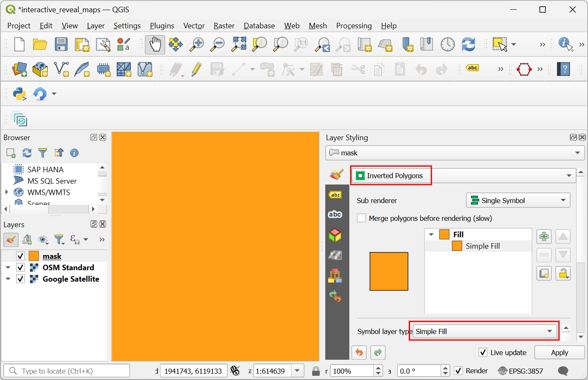
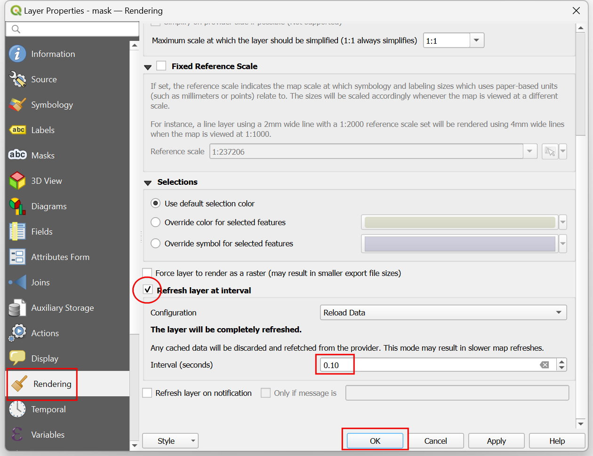

Ujaval Gandhi
Ujaval GandhiCreación de mapas interactivos (QGIS3)¶
Este tutorial muestra cómo utilizar una capa de máscara dinámica en un grupo de capas junto con expresiones para hacer un mapa interactivo que revele las capas debajo de la capa actual a medida que mueve el cursor. Esto se hace usando los nuevos modos de mezcla de máscara <https://changelog.qgis.org/en/entry/2154>`_ en QGIS junto con la técnica para añadir interactividad mostrada en el tutorial anterior en Creación de mapas interactivos en lienzo (QGIS3).
Este tutorial está inspirado en Hamish Campbell que compartió su visualización interactiva en LinkedIn.
Visión general de la tarea¶
Cargaremos 2 capas de teselas rasterizadas y utilizaremos una capa de máscara con simbología de generador de geometría para revelar la capa inferior a medida que el cursor se desplaza por el lienzo.

Procedimiento¶
Empezaremos cargando 2 capas de trama. Una capa en la parte superior y otra en la parte inferior que será revelada por la capa de máscara. Las obtendremos del plugin QuickMapServices. Busque e instale el complemento QuickMapServices del repositorio oficial de complementos de QGIS. Ver Usar Complementos (QGIS3) para instrucciones sobre la instalación de plugins. Una vez instalado, necesitaremos añadir algún servicio adicional a este complemento. Vaya a .

En el cuadro de diálogo Configuración de QuickMapServices, cambie a la pestaña Más servicios y haga clic en el botón Obtener paquete contribuido. Este paso es necesario para acceder al mapa base de Google Satellite.

Ahora estamos listos para añadir las capas. La capa superior de nuestro mapa será la capa de OpenStreetMap. Ve a para añadirla. Haz zoom y centra el mapa en la posición que desees.

A continuación añada la capa Google Satellite desde . Esta será la capa inferior que se mostrará utilizando la máscara.

Crearemos una nueva capa que actuará como máscara. Vaya a .

En el cuadro de diálogo Nueva capa de GeoPackage, haga clic en el botón … de Base de datos y busque un directorio en su ordenador. Guarde la capa como
mask.gpkg. Cambie Geometry type aPolígonoy el SRC aSRC del proyecto: EPSG:3857 - WGS84 / Pseudo-Mercator. Tener esta capa en un SRC proyectado es útil ya que nos permite especificar el radio de la máscara en metros en lugar de grados. Haga clic en Aceptar.

Se añadirá una nueva capa
máscaraal panel Capas. Haga clic en el botón Abrir el panel de estilo de capas. Haga clic en Simbolo único para ver opciones adicionales para los renderizadores.

Seleccione
Polígonos invertidoscomo renderizador. Desplácese hacia abajo y haga clic en la etiqueta Relleno simple para ver otros tipos de capas de símbolos.

Nota
El renderizador de polígonos invertidos se utiliza para mostrar regiones fuera de la característica. En nuestro caso, la capa máscara está vacía, por lo que la región invertida es todo el lienzo. Por eso se ve todo el lienzo renderizado usando la simbología elegida. Usamos este renderizador para el tutorial ya que puede renderizar el mapa sin necesidad de que ninguna característica esté presente en la capa y funcionará en cualquier parte del mundo.
Select
Geometry Generatoras the Symbol layer type. We will now enter an expression to change how the layer is rendered. Click the Expression button.

Introduzca la siguiente expresión en el diálogo Constructor de expresiones. Esta expresión creará un polígono de amortiguación con un radio de 5000 metros alrededor de la posición actual del cursor. Haga clic en Aceptar.
buffer(@canvas_cursor_point, 5000)
Verá un polígono circular renderizado dondequiera que haga clic en el lienzo. Ajuste el tamaño del buffer si es necesario para su región y cierre el Panel de Estilización de Capas. Para utilizar los modos de fusión de máscara, debemos crear un grupo de capas. Mantenga pulsada la tecla Ctrl y seleccione las capas
máscarayOSM Standard. Haga clic con el botón derecho del ratón sobre las capas seleccionadas y elija Grupo seleccionado.

Se creará un nuevo grupo de capas. Introduzca el nombre como
mask_group. Haga clic en el botón Abrir el panel de estilos de capa.

Marque el botón Renderizar capas como grupo. Este paso activa los modos de fusión de máscara para las capas de este grupo.

Seleccione la capa
máscarademask_group. En el panel Estilos de capa, desplácese hacia abajo y expanda la sección Renderizado de capa.

Haga clic en el selector desplegable de Capa Modo de fusión. Seleccione el modo de fusión
Máscara inversa debajo. La capa situada debajo del grupo de capas se mostrará ahora en la parte cubierta por el polígono intermedio.

The map canvas doesn’t yet respond to the cursor movement because it doesn’t refresh unless you move the map. Let’s make it auto-refresh. Right-click the
masklayer and select Properties.

Cambie a la pestaña Renderizado. Desplácese hacia abajo y marque la casilla Refrescar capa a intervalos. Fije el intervalo en un número pequeño como
0.1(es decir, 100ms) y haga clic en Aceptar.

Ahora, al mover el cursor, la región situada por debajo de la posición del cursor se mostrará de forma interactiva.
If you want to give feedback or share your experience with this tutorial, please comment below. (requires GitHub account)